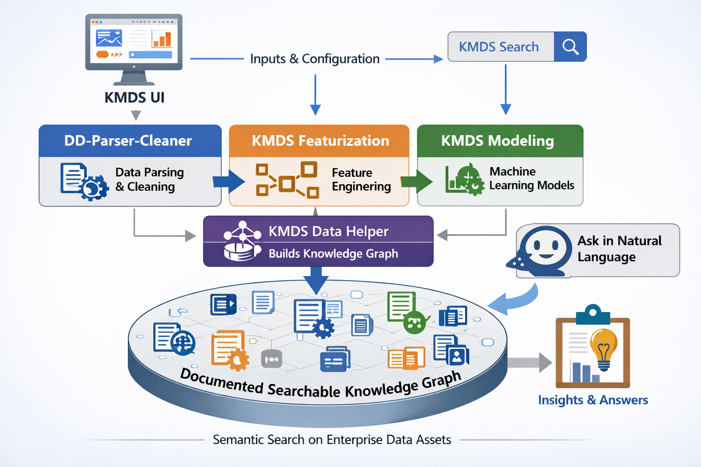

Most machine learning consulting leaves organizations with a common problem: models that perform well in a sandbox but break when exposed to real-world operational data, leaving internal teams with a system they cannot easily audit or maintain. I bring 25+ years of engineering experience developing analytical solutions across multiple industries, together with formal training in machine learning at the PhD level. I use Knowledge-Centric Machine Learning Systems (KMDS) as the framework for delivering ML products with auditability, transparency, and reproducibility built in. Because operational data is rarely clean or static, the real value comes from capturing and structuring the analytical knowledge, feature definitions, and data dependencies that make a solution sustainable. That keeps ML aligned with how your business operates and turns operational data into a reliable asset your team can confidently manage over the long term.
This page implements justified text using the just-the-docs text-justify class.
Watch a short video describing my background and the KMDS approach to operational model development.

Operational Analytics for Monthly and Quarterly Decision Making
I help organizations transform operational data into repeatable analytical systems that are transparent, auditable, and maintainable.
What I do: Turn complex operational datasets into usable decision workflows for recurring reporting and planning.
Who it is for: Organizations that collect operational data frequently and need dependable monthly or quarterly decisions.
Methodology
- Identify the business decision.
- Identify the unit of analysis.
- Understand temporal structure.
- Identify entities and relationships.
- Assess data quality.
- Design features.
- Select modeling strategy.
- Capture assumptions and operational risks.
- Preserve analytical knowledge.
Featured SBA Example
Raw SBA loan data becomes the example for a repeatable operational analytics workflow. This example shows how raw operational data is turned into a stable, repeatable decision process using a KMDS component view.
The KMDS migration repository documents the component-based approach for operational analytics. Please see this article for a technical overview of the KMDS approach.

Raw SBA Loan Dataset
↓
Dataset Understanding
↓
Entity Identification
↓
Cleaning Recommendations
↓
Feature Engineering
↓
Modeling Ready Dataset
↓
Knowledge Preservation
↓
Repeatable Business Decisions
This is the same approach used for lending, customer analytics, operations, demand forecasting, service delivery, and asset management.
Who I Help
- Organizations with operational data collected daily, weekly, or monthly
- Teams that review decisions on a monthly or quarterly cadence
- Leaders who need consistent definitions, lineage, and explainable decisions
- Groups focused on lending, customer analytics, operations, forecasting, service delivery, or asset management
Methodology Before Tooling
Most analytics projects underperform not because the model is weak, but because the surrounding system is not repeatable. The questions I answer first are:
- What is the unit of analysis?
- What entities and temporal structure exist?
- What decision does this dataset support?
- How will the solution be maintained over time?
A durable methodology matters before tooling. Platforms such as KMDS support this work, but clients buy repeatable outcomes, not software.
Why not just use…
Documentation
Documentation remains essential, but documents are difficult to maintain, search, and reuse during day-to-day analytical work. As projects evolve, critical decisions become scattered across notebooks, reports, tickets, and emails.
KMDS treats documentation as raw material rather than the final product. Analytical decisions are captured as structured knowledge that can be queried, traced, and reused by both people and AI agents.
AI Coding Assistants
Modern AI assistants are excellent at generating code, summarizing information, and automating repetitive tasks. However, they can only reason from the information they are given.
If the rationale behind feature engineering, modeling choices, or business assumptions was never captured, an AI assistant cannot recover it.
KMDS focuses on preserving that analytical reasoning so future assistants can build upon institutional knowledge instead of starting from scratch.
MLOps and Operational AI Platforms
Operational AI platforms excel at deploying, monitoring, and scaling machine learning systems in production. They answer questions such as:
- How is the model deployed?
- Is the service healthy?
- Has model performance degraded?
KMDS addresses a different stage of the lifecycle. It focuses on understanding the data, documenting analytical decisions, preserving modeling rationale, and maintaining organizational knowledge before and during model development.
The two approaches are complementary rather than competing.
Knowledge Management for Data Science
Most organizations already possess valuable analytical knowledge.
The challenge is that it is often distributed across repositories, notebooks, documents, and individual experience.
KMDS transforms that fragmented knowledge into a structured organizational asset that can be searched, audited, and reused over time.
The objective is not simply to build better models.
It is to preserve the reasoning behind those models so that future teams—and future AI systems—can understand, extend, and trust the analytical decisions that were made.
Technical Focus Areas
- Statistical Learning Systems
- Graph Machine Learning
- Analytical Infrastructure
- Optimization & Recommendation Systems
- Explainable AI Systems
- Knowledge Graph Systems for ML and AI explainability and traceability
Selected Publications
Selected publications and research contributions spanning scalable statistical learning, graph-oriented analytical systems, optimization, and enterprise-scale machine learning infrastructure are available on my Google Scholar profile.
Research Philosophy
I am interested in analytical systems that combine mathematical rigor, interpretability, graph-based representations, scalable systems engineering, and operational reproducibility within enterprise environments.
This intersection between statistical learning, systems architecture, and knowledge representation forms the foundation of my current work.
Current Areas of Interest
- Graph-centric machine learning systems
- Knowledge-oriented analytical infrastructure
- Interpretable statistical learning
- Analytical lineage and reproducibility
- Enterprise-scale ML systems architecture
- Semantic systems for applied AI
Contact
For analytical systems architecture, graph machine learning, optimization systems, interpretable ML infrastructure, and research collaborations. Available for contract and advisory engagements with U.S.-based organizations.